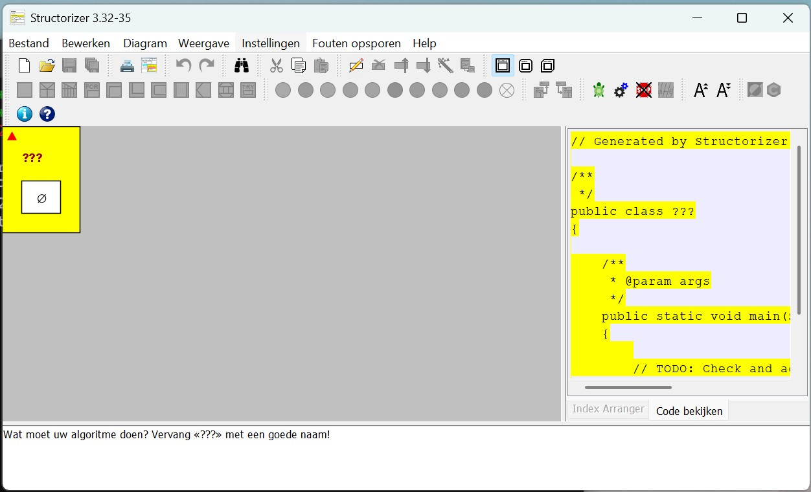
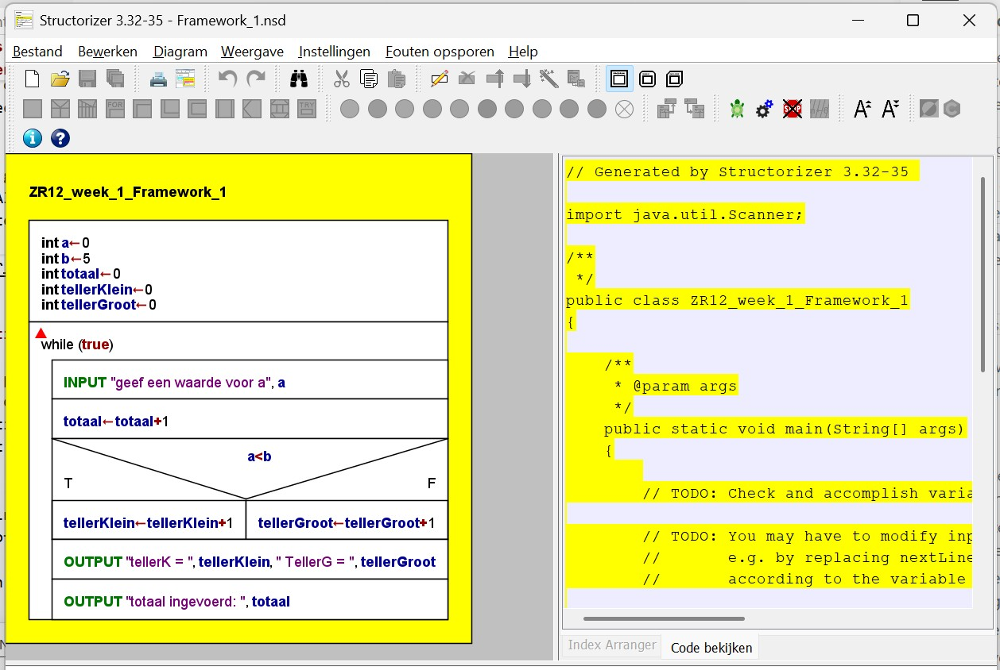
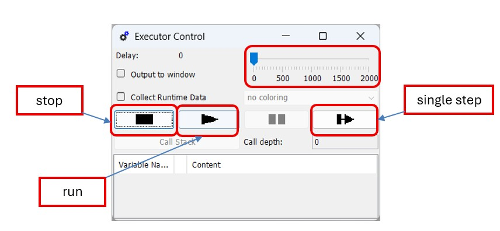

Opdracht 1: Oefenen met PSD’s
In deze opdracht ga je aan de slag met het maken van programma’s in Structorizer. Structorizer is een tool waarmee je programma’s kunt ontwerpen en simuleren met behulp van Programma Stroom Diagrammen (PSD’s). Je leert hoe je de basisconstructies van programmeren toepast in PSD’s en hoe je deze uitvoert en debugt met de Executor-functie van Structorizer.
Opdracht 1.1: Structorizer en Java installeren
Installeer de volgende software:
Structorizer: simulatiepakket voor PSD’s. Dit gebruik je in dit practicum om te oefenen met de drie basisstructuren van programmeren. De laatste versie is te downloaden via Structorizer.Kies op de website onder
Downloadsdewindows installer.Het bestand wordt gedownload naar je map
Downloads.Dubbelklik op
structorizer.exeom de installatie te starten en volg de instructies op het scherm.
Java: te downloaden via Java.Kies op de website onder
Java voor desktopsde knopGratis Java Download.Het bestand wordt gedownload naar je map
Downloads.Dubbelklik op
jre-...-windows-x64.exeom de installatie te starten en volg de instructies op het scherm.
Java SE Development Kit (JDK), versie21.0.9of later.JDK versie 21.0.9 staat op Brightspace bij
Software.De JDK is ook te downloaden via Java SE Development Kit (JDK).
Installeer de JDK (niet alleen de JRE), omdat de JDK nodig is voor het ontwikkelen van Java-toepassingen.
Waarschuwing
Downloadlinks kunnen wijzigen. Probeer eerst zelf een oplossing te vinden als een link niet werkt. Neem contact op met de practicumbegeleider als je daarna nog steeds problemen hebt met downloaden of installeren.
Test of de software correct is geinstalleerd:
Open het Startmenu en zoek naar
Structorizer.Start de applicatie.
Controleer of Structorizer zonder foutmeldingen opent.

Figuur 1: Structorizer-programma
Opdracht 1.2: Basisconstructies in PSD’s
Notitie
Alvorens je aan de opdrachten begint, is het belangrijk dat je de workshopbestanden hebt gedownload. Deze bestanden bevatten de benodigde code, schema’s en instructies voor de opdrachten die je zult uitvoeren tijdens de workshop. Zie Installatie-instructies voor informatie over het verkrijgen van de workshopbestanden.
Gebruik voor deze opdracht het project Framework_1.nsd.
Dit bestand staat in
opdracht1/structorizervan de microcontrollers workshop.Zie Installatie-instructies voor informatie over het verkrijgen van de workshopbestanden.

Figuur 2: Structorizer met framework 1
Dit Structorizer-programma telt:
het totaal aantal ingevoerde gehele getallen;
hoeveel van die getallen kleiner zijn dan 5;
hoeveel getallen groter dan of gelijk aan 5 zijn.
Voer daarna de volgende stappen uit:
Start het programma via
Debug > Executor(zie figuur 2). Zet de delay op0. Start met de knopRunen controleer of het programma de beschreven functionaliteit heeft.Voer het programma opnieuw uit via
Debug > Executor, maar zet de delay op ongeveer400. Start daarna metRunen volg de programmastroom tijdens de uitvoering.Voer het programma opnieuw uit via
Debug > Executor, maar start nu metSingle Step. Druk herhaaldelijk op deze knop en volg de programmastroom in het PSD. Let ook op de waarden van de variabelen.Pas het programma aan: voeg een teller toe die bijhoudt hoe vaak de waarde
5is ingevoerd. Toon deze tellerwaarde ook. Gebruik de variabelenaamteller5.Pas het programma opnieuw aan: voeg een teller toe die bijhoudt hoe vaak de waarde
0is ingevoerd. Toon deze tellerwaarde ook. Gebruik de variabelenaamteller0.

Figuur 3: Executor-venster
Opdracht 1.3: Berekenen van het gemiddelde van een lijst getallen
Gebruik voor deze opdracht het project Framework_2.nsd.
Maak in Structorizer een programma dat het gemiddelde berekent van een lijst met in te voeren niet-negatieve getallen (dus positief of 0). Het programma moet aan de volgende eisen voldoen:
Er moet minimaal een getal worden ingevoerd.
Het einde van de lijst met in te voeren niet-negatieve getallen wordt aangegeven met de waarde
-1. Deze waarde telt niet mee voor het berekenen van het gemiddelde.Als de invoer van de lijst wordt afgesloten met de waarde
-1, moeten het gemiddelde en het aantal ingevoerde getallen worden weergegeven.Het programma herhaalt zich oneindig.
Opdracht 1.4: Uitbreiding van opdracht 1.3
Breid de uitwerking van opdracht 1.3 uit, zodat ook wordt geteld hoe vaak de waarde 0 in de invoerlijst voorkomt. Toon deze waarde ook.
Opdracht 1.5: Inleveren van de opdracht
Maak een screenshot van je Structorizer-programma en van de uitvoer. Zorg ervoor dat duidelijk zichtbaar is dat je programma correct werkt en voldoet aan de eisen van de opdracht. Lever daarna de screenshot in via Brightspace bij Opdracht 1: Oefenen met PSD's.